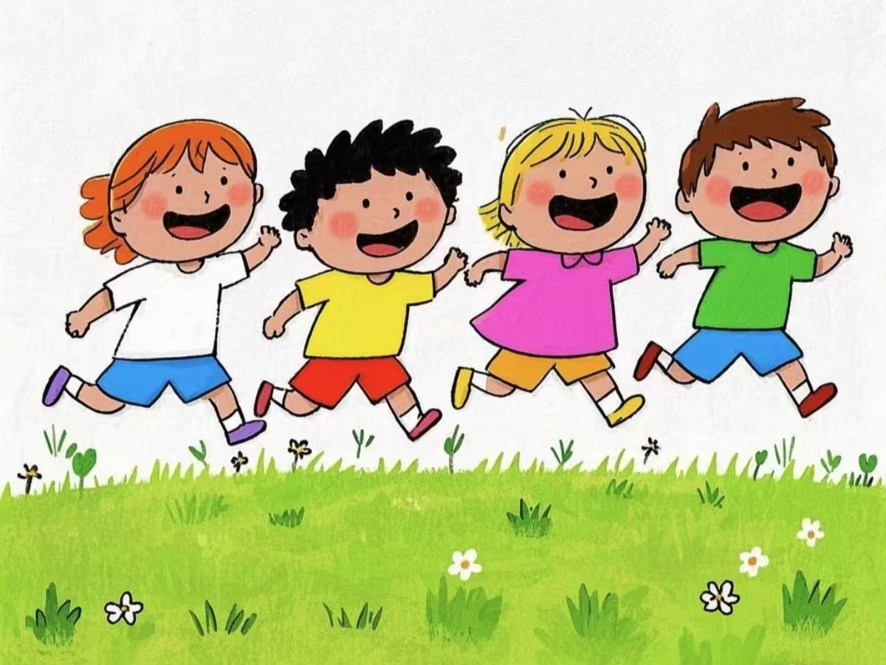

在家庭、学校和社会的熏陶下，我逐渐形成了自己的价值观、信仰和人格特征。
小时候，我非常喜欢玩耍、看动画片、听故事和吃零食。我的父母非常疼爱我，并为我提供了良好的家庭环境和教育。他们教会了我如何尊重他人、讲礼貌、爱学习等重要的品质。在学校里，我遇到了许多优秀的老师和同学，他们激发了我对知识的热爱和对生活的热情。
随着年龄的增长，我开始逐渐意识到自己的价值和责任。高中我进入了元济高级中学，交到了很多的好朋友，过完了充实且有趣的三年高中生活。之后，我考进了嘉兴大学，进入了我们学生事务与发展中心任干事，也学到了许多工作经验。
在成长的过程中，我也学会了如何与他人合作和沟通。我意识到团队合作和人际关系的重要性，并努力与他人建立良好的关系。通过与他人的交流和合作，我不仅获得了更多的知识和经验，还结交了许多志同道合的朋友。我认为大学就是要多见见世面，要多出门玩玩，看看美丽的世界。
回顾我的成长经历，我认为家庭、学校、社会和自己的努力都对我产生了深远的影响。这些因素共同塑造了我的价值观、信仰和人格特征，并让我成为了一个有责任感、独立自主、积极向上的人。我相信这些经历将伴随我一生，并激励我在未来不断追求进步和完善自己。